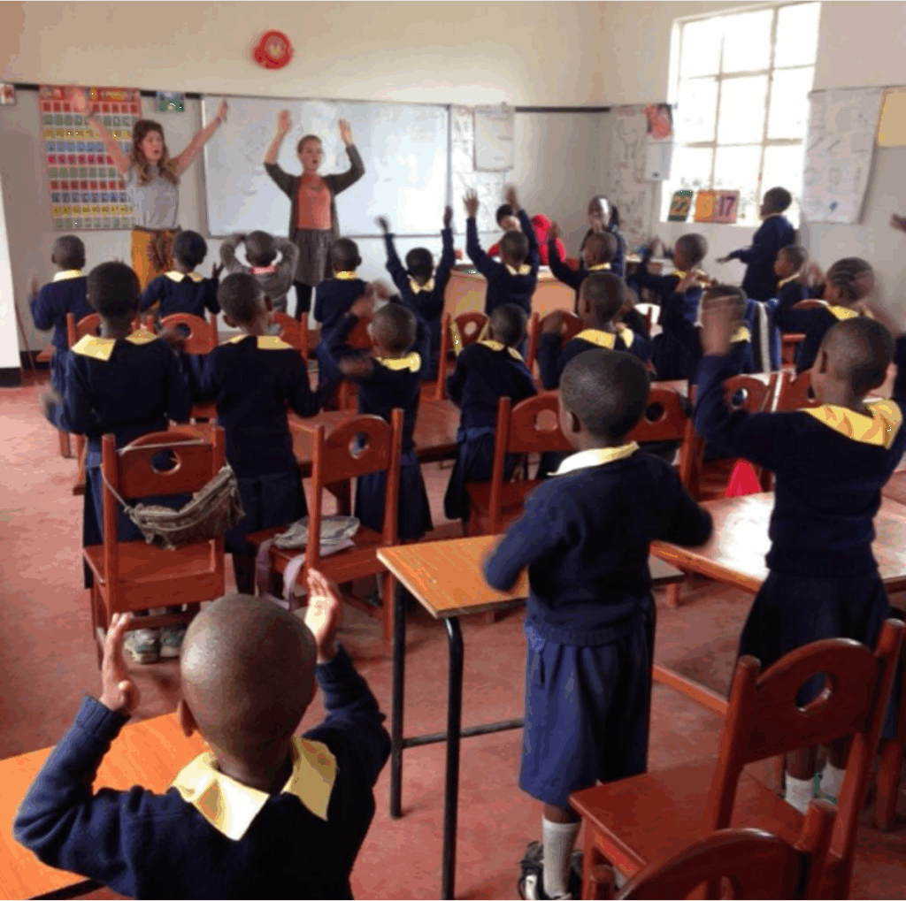

Africa's Children in Education (ACE) is a small UK-registered charity with a powerful mission: that every child, regardless of circumstances, has access to meaningful education as a pathway out of poverty.
Born from its founders' volunteer work in East Africa, ACE has focused on establishing and nurturing Arise Community School in Tanzania. What began as a single classroom has grown into a thriving primary school serving hundreds of children from the surrounding communities.
At the heart of ACE's work is a belief that quality education uplifts not just individual children but entire communities, guiding Arise toward becoming a self-sustaining centre of learning, care, and opportunity.
